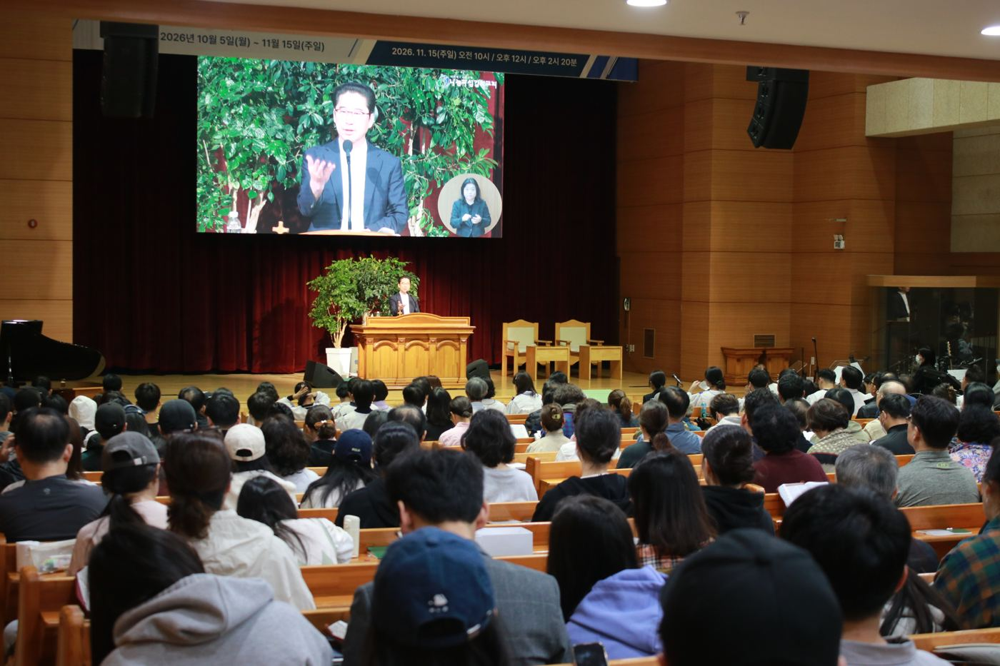
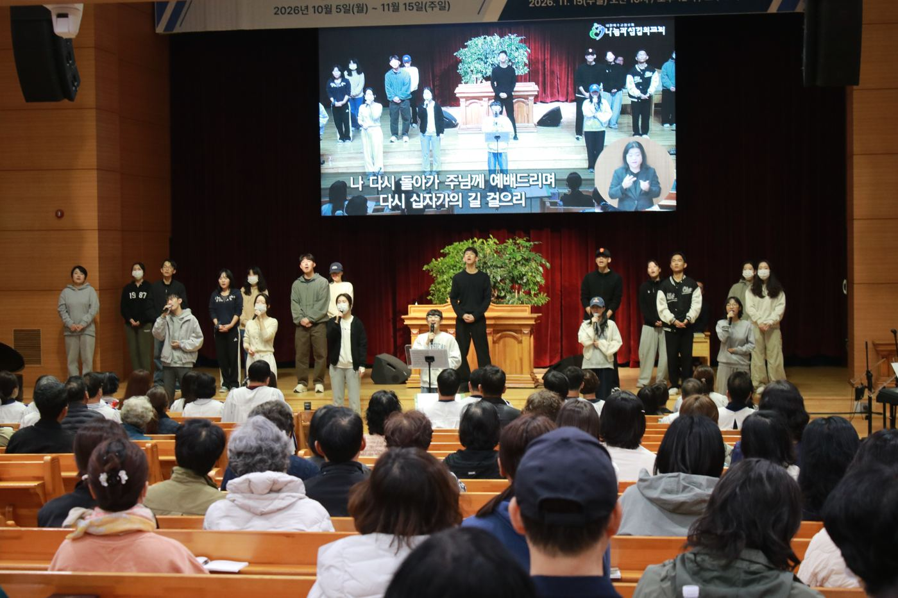
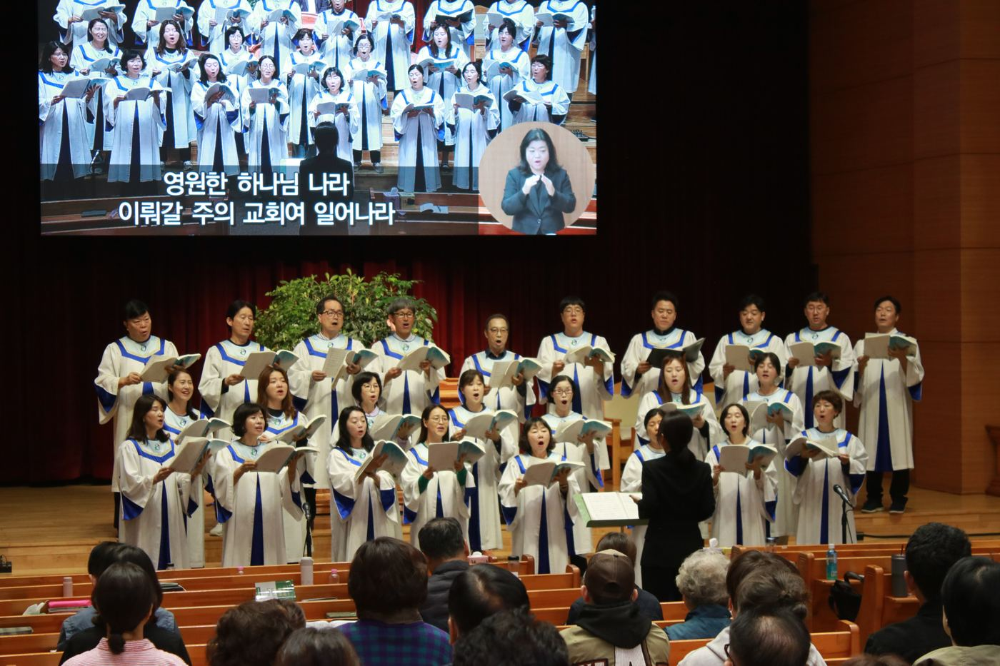
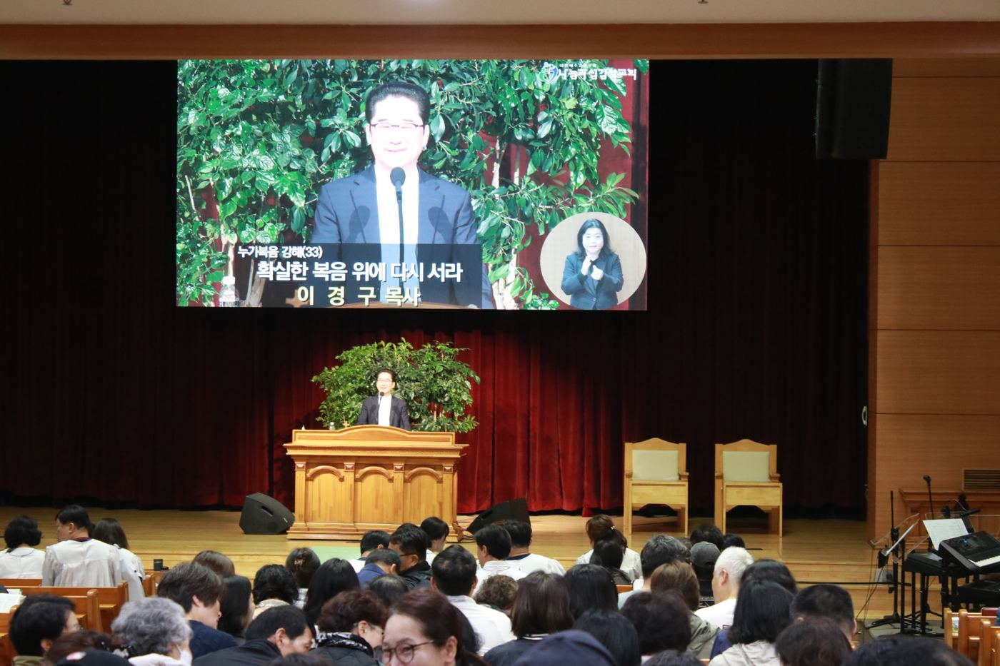
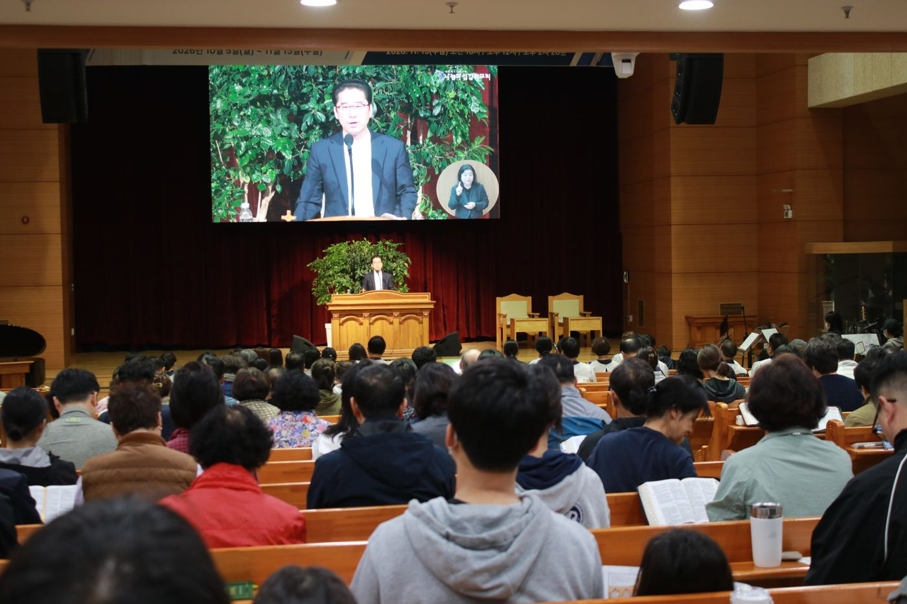

“예수님과 함께 걷고, 복음으로 다시 살아나자”
나눔과섬김의교회, 5일 새벽 40일 특별새벽기도회 개막… 11월 15일까지 말씀·기도·감사·찬양·전도·봉사의 여정
나눔과섬김의교회(담임 이경구 목사)가 5일 새벽 5시 30분 ‘40일 특별새벽기도회’를 시작하며 올해 ‘40일 천국잔치’의 막을 올렸다. 교회는 “예수님과 함께 걷고, 복음으로 다시 살아나자!”를 표어로 삼아 오는 11월 15일(주일)까지 6주간 누가복음과 함께하는 ‘행복한 믿음 여행’을 이어간다.

찬양으로 열고, 말씀으로 시작한 첫 새벽
새벽기도회는 매일 5시 20분 청년부와 코이노니아 찬양팀의 찬양으로 문을 연다. 첫날에도 청년들이 강단에 올라 찬양을 인도했고, 성도들은 함께 찬양하며 40일 여정의 첫걸음을 뗐다.

이어 찬양대의 특송이 이어졌다. 새벽 특송은 매일 날짜 순서에 따라 각 기관과 사랑방, 고을별로 준비하며, 첫날은 코이노니아 찬양대가 맡았다.

말씀 시간에는 이경구 목사가 ‘누가복음 강해(33)’ 시리즈로 ‘확실한 복음 위에 다시 서라’를 주제로 말씀을 전했다. 성도들은 성경을 펴 놓고 말씀에 귀 기울였다.

“문제만 바꾸지 마시고 저를 변화시켜 주옵소서”
교회가 배포한 안내 책자의 권두 글은 이번 40일의 방향을 분명히 했다. 응답받는 시간을 넘어 예수님을 더 깊이 만나고 복음을 다시 붙드는 시간이 되자는 것이다. 누가복음이 전하는 예수님은 잃어버린 자를 찾아오시고, 상처 입은 자를 품으시며, 죄인을 용서하시고, 절망한 사람에게 새로운 소망을 주시는 분이라고 소개했다.
“주님, 제 문제만 바꾸지 마시고 저를 변화시켜 주옵소서.” — 40일 천국잔치 안내 책자 ‘40일 천국잔치를 열며’ 중
책자는 40일 후 모든 형편이 달라져 있지 않을 수도 있지만 마음만큼은 달라져 있기를 소망한다며, 엠마오 두 제자의 고백(눅 24:32)처럼 성도들이 40일의 마지막 날 “예수님과 함께 걸었더니, 복음으로 내가 다시 살아났습니다”라고 함께 고백하기를 바란다고 밝혔다.

40일 천국잔치, 이렇게 참여하세요
교회는 성도들에게 세 가지 참여 방법을 안내했다.
- 40일 캠페인을 생활화하십시오 — 말씀·기도·감사·찬양·전도·봉사를 매일 실천하고, ‘40일의 기적을 위한 생활 점검표’로 점검합니다.
- 자신의 역량대로 금식하십시오 — 저녁 금식을 권하며, 하루 한 끼 금식은 마음을 하나님께 집중하는 좋은 방법이라고 교회는 설명했습니다.
- 특별새벽기도회에 꼭 참석하십시오 — 일찍 잠자리에 들고, 이웃끼리 카풀을 하며, 사랑방 식구들끼리 모닝콜로 결석하지 않도록 서로 챙깁니다.
특별한 수요일 집회, 세 명의 초청 강사
40일 동안 세 차례의 수요일 저녁 집회(오후 8시)가 열린다.
| 일시 | 강사 | 소개 |
|---|---|---|
| 10월 14일(수) | 홍융희 목사 | 성민교회 위임목사, 다음세대사역 전문 |
| 10월 28일(수) | 임현수 목사 | 캐나다 큰빛교회 원로, 『내가 누구를 두려워하리요』 저자 |
| 11월 11일(수) | 민호기 목사 | 찬미워십대표, 대신대학교 음대교수 |
홍융희 목사는 CBS ‘새롭게 하소서’와 CGNTV ‘나침반’에 출연했다. 임현수 목사는 2015년 대북 지원 활동 중 억류됐다가 2017년 8월 석방됐다. 민호기 목사는 ‘원하고 바라고 기도합니다’ 등을 작사·작곡했다.
지역과 함께하는 교회 행사들
40일 기간에는 지역사회와 함께하는 행사도 이어진다.
| 일시 | 행사 | 내용 |
|---|---|---|
| 10월 20일(화) | 제81주년 경찰의 날 | 대구경찰청 직원·관계자 대상 ‘경찰사랑주간(사랑의 차 나눔)’ 행사 |
| 10월 24일(토)·25일(주일) | 하프데이 | 출석체크표 기준 교회 행사 |
| 10월 31일(토) | 이웃사랑 바자회 | ‘행복한 동행 PROJECT’, 수익금 전액을 지역사회 어르신들을 위해 사용 |
| 11월 15일(주일) | 선교 축제 | 제2차 VIP 153 MISSION 초청일, 교회 선교 상황과 각 전도회 사역 소개 |
남은 과제: 40일 이후의 삶
나눔과섬김의교회는 “다시 말씀으로, 다시 기도로, 다시 예수님께로” 나아가자며 성도들의 동참을 당부했다. 첫 새벽의 찬양과 말씀으로 시작된 이번 천국잔치가 11월 15일 선교 축제로 마무리되기까지 성도들의 삶에 어떤 변화를 남길지 주목된다.